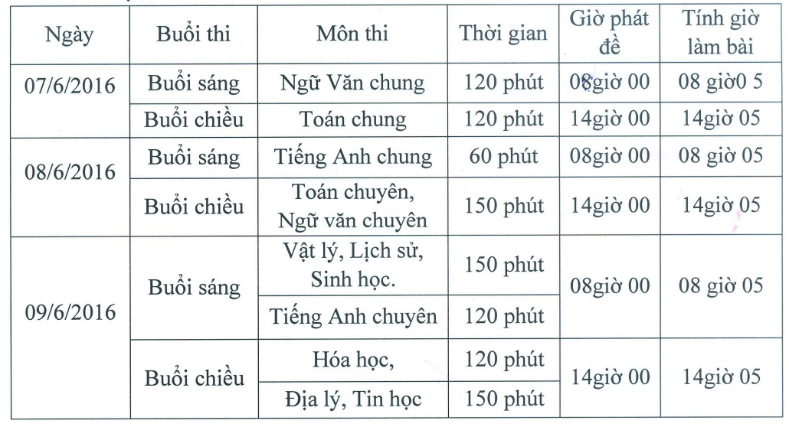

Danh sách thí sinh tuyển sinh 10 THPT Chuyên năm học 2016 - 2017

Lần cập nhật cuối lúc Thứ hai, 30 Tháng 5 2016 16:56 Viết bởi Administrator Chủ nhật, 29 Tháng 5 2016 09:41
Lịch thi tuyển sinh tuyển sinh 10 THPT Chuyên năm học 2016 - 2017.

1. Thí sinh thi tuyển vào lớp 10 THPT Chuyên năm học 2016 – 2017 lưu ý:
- Xem kỹ thông tin: Họ và tên, ngày tháng năm sinh, nơi sinh
- Môn chuyên 1 và môn chuyên 2: nếu trùng buổi thi sẽ không thi được.
- Kiểm tra kỹ điểm trung bình môn chuyên 1, môn chuyên 2(nếu có), điểm trung bình cả năm lớp 9.
- Giải HSG các môn văn hoá lớp 9, điểm sơ tuyển (vòng 1).
Nếu có sai sót báo ngay về Phòng Giáo vụ để được xử lý. Nếu thí sinh không báo sai sót thì phải chịu hoàn toàn trách nhiệm sau này.
2. Học sinh có mặt tại Trường THPT Chuyên Nguyễn Bỉnh Khiêm vào lúc 7h30 ngày 06/6/2016 để biết địa điểm thi, nhận thẻ dự thi.
Danh sách thí sinh đăng ký tuyển sinh 10 tải file đính kèm tại đây.
Lưu ý:
- Cột Giải HSG lớp 9 là những giải văn hoá môn tương ứng đạt giải mới được nhập tên giải vào hệ thống.
-Cột tên Trường THPT là mặc định trên chương trình nhập vào không cần quan tâm sau này nếu học sinh không trúng tuyển vào trường chuyên sẽ được phân tuyến theo địa bàn cụ thể sau.
- 11/11/2016 08:06 - Thiết kế xây dựng tượng cụ Nguyễn Bỉnh Khiêm
- 06/10/2016 07:35 - Đề thi minh họa kỳ thi THPT quốc gia năm 2017
- 29/09/2016 00:00 - Hội nghị Sơ kết thực hiện đề án phát triển hệ thốn…
- 08/09/2016 00:00 - Lễ ký kết hợp tác giữa Trường THPT Chuyên Nguyễn B…
- 04/06/2016 07:51 - Danh sách thí sinh thi tuyển sinh 10 THPT Chuyên n…
- 12/05/2016 08:29 - Thư ngỏ tuyển sinh 10 THPT Chuyên Nguyễn Bỉnh Khiê…
- 21/04/2016 09:34 - Ưu tiên tuyển thẳng học sinh giỏi các trường chuyê…
- 05/04/2016 10:22 - Văn bản hợp nhất TT 02-2015 và 02-2016 Thông tin v…
- 29/03/2016 10:09 - Thông tin tuyển sinh đại học - cao đẳng hệ chính q…
- 23/03/2016 14:13 - Hướng dẫn tuyển thẳng - ưu tiên xét tuyển vào đại …